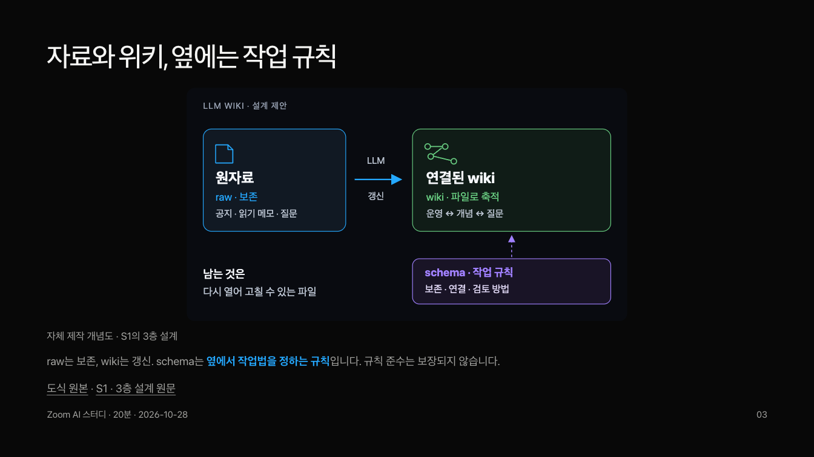
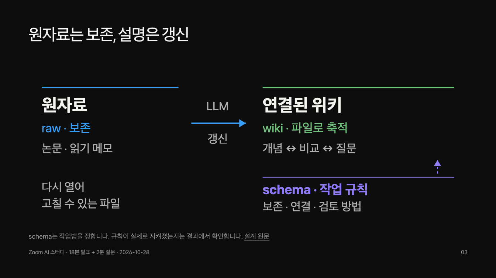

LLM WIKI · AI STUDY발표에서 이해하고,
공부 자료에서 직접 이어가기.
발표는 14장, 설명18분과 질문2분. 별도 자료는 원문 읽기·개념 연결·검토한 답 저장·변경 diff·결정 이유를 자세히 다룹니다. 읽기 시간은 학습 경로를 위한 추정입니다.
같은 개념, 더 크게 읽기

이전 · 작은 도식과 반복 설명
개선 · 큰 관계도와 짧은 설명발표 14장
발표와 학습 자료는 각자의 일반 Markdown 원본에서 생성합니다. 문서 목차·상호 링크·발표 복귀·모바일 탐색도 함께 생성되어 다음 주제에 재사용할 수 있습니다.
검수 근거